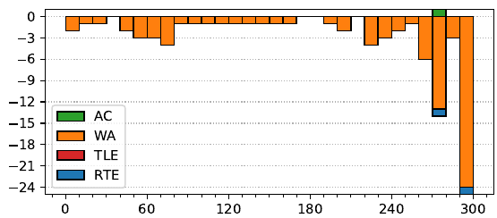

46th ICPC World Finals
Problem authors:
Walter Guttmann and Paul Wild
Solved by 1 team.
First solved after 276 minutes.
Shortest team solution: 1433 bytes.
Shortest judge solution: 857 bytes.

There are a number of observations that can be made about the structure of the solution:
After every forward crossing except the last, we need to perform one back-crossing. So, we can instead pay for the back-crossing when we cross the fast walkers forward, and keep track of how many paid-for back-crossings we have accumulated.
This naturally translates to a dynamic programming solution, where we calculate the cost of having the k slowest people already crossed, and l back-crossings earned. Naively, this is O(n³) — we have n² states, and up to n transitions out of each state. But, if you look closer, it never makes sense to accumulate more that n/c backcrossings (since that’s already enough to cross everyone over), so the state space is O(n²/c). At the same time, the number of transitions out of a state is O(c), so the actual cost after filtering out unreachable states and nonexistent transitions is O(n²).
While the resulting code is short, a number of judges found the implementation to be tricky to get right.